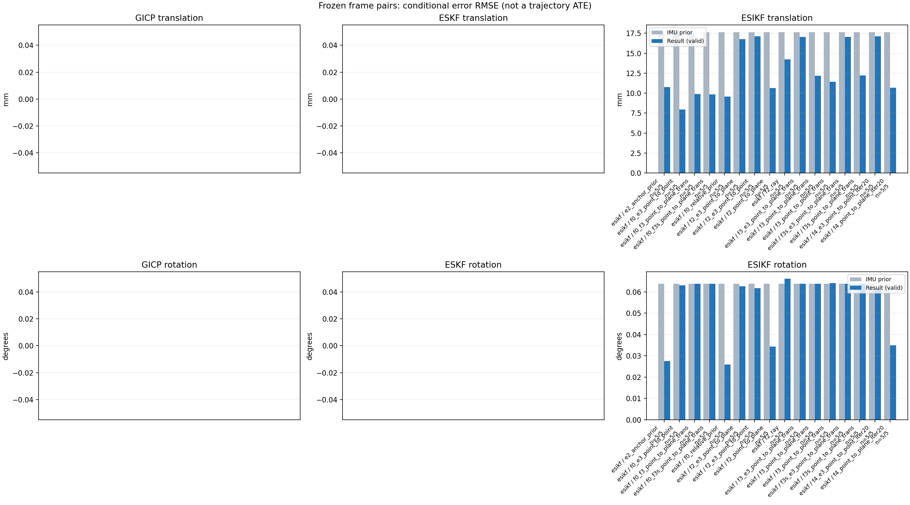

20261015_112845_yaw_left · depth=disparity_cache · cache=010d80541839e7f7cc16
模型视差：/home/ubuntu22/slam/SIO_SLAM/models/tensorrt/disp_896x448_fp16.plan；engine SHA256=604cf6ac1f705c877260711730dd5d2d58c2a21f3020c03c668401ef7fb1e768。输入为生产裁剪与光照处理后的 RGB 0..255；此实验使用原始浮点像素视差，不应用完整前端的邻域视差后处理。
原始 ONNX SHA256：e9f49736a65d68d06681add463866b6defdf78fdd7f4f50f6cc941b682fdc0bc。
代价体图改写验证：ONNX Runtime 固定随机特征输入，最大绝对误差 0；该项检查图改写，完整模型精度仍需由录制数据评估。
配准代码版本：744ac2d993ae629b0cc44a3b1d995e04ab4fad48；观测生成版本：744ac2d993ae629b0cc44a3b1d995e04ab4fad48。
固定图像对与纯 IMU 先验；ESKF 回放固定 GICP 观测，ESIKF 直接读取点云。真值只用于此报告。
同时查看 converged 与 solver_status：上游默认 Stereo 在 max_iter / stopped_at_minimum 时也可能置 converged=true。valid 表示输入检查通过，不表示精度提升。欧氏 GICP 未提供独立的点距 RMSE，该列显示 NaN。
误差按每对图像的锚点计算，单位 m / degrees。此处 RMSE 不是全序列 ATE；末帧受同一锚点条件约束。NIS 与条件马氏距离是诊断量，少量相关图像对不能用于宣称协方差已校准。
全部指标 CSV · R / P 矩阵 CSV · Stereo 求解逐轮 CSV · ESIKF 逐轮轨迹 CSV · 末轮 H / R / K_pose 矩阵 CSV · 配置快照 · 矢量图
unflagged 排除纯惯性先验平移误差超过 50 mm 的图像对；whitened 为误差按协方差白化后的每自由度均值，协方差与实际误差相符时约为 1。prior_whitened 用真值误差只检验先验 P；NIS 为 ESIKF 首轮 rᵀ(P+R)⁻¹r，不用真值，检验的是 P+R 的总量，单靠它分不开 P 与 R，偏差、错误对应和线性化误差也会抬高它。观测方差超过先验方差 1e+04 倍的方向视为不可观，从 NIS 及其自由度中去掉（nis_dof）。一致时 nis_per_dof 均值约 1、nis_over_chi2_median 中位数约 1；帧对少且共享序列，超出 95% 分位的比例只作参考。
| stage | method | variant | valid | total | result_translation_rmse_m | result_rotation_rmse_deg | result_translation_median_m | result_rotation_median_deg | result_translation_rmse_unflagged_m | result_rotation_rmse_unflagged_deg | improved_translation | improved_rotation | posterior_whitened_by_P_rot_mean | posterior_whitened_by_P_trans_mean | prior_whitened_by_P_rot_mean | prior_whitened_by_P_trans_mean | nis_per_dof_mean | nis_over_chi2_median_median | nis_exceeds_chi2_95_fraction |
|---|---|---|---|---|---|---|---|---|---|---|---|---|---|---|---|---|---|---|---|
| esikf | esikf | e2_anchor_prior | 5 | 5 | 0.010748 | 0.027548 | 0.0050723 | 0.016202 | 0.010748 | 0.027548 | 2 | 1 | 26.051 | 254.25 | 21.543 | 102.29 | 12.4 | 5.2163 | 0.8 |
| esikf | esikf | f0_e3_point_to_point | 5 | 5 | 0.0079567 | 0.063008 | 0.0052048 | 0.0093522 | 0.0079567 | 0.063008 | 2 | 2 | 1.8261 | 2.1912 | 1.7539 | 0.026368 | 0.15226 | 0.068958 | 0 |
| esikf | esikf | f0_f3_point_to_plane_trans | 5 | 5 | 0.0098935 | 0.063734 | 0.004393 | 0.0099704 | 0.0098935 | 0.063734 | 2 | 2 | 1.753 | 39.724 | 1.7539 | 0.026368 | 8.0651 | 2.057 | 0.4 |
| esikf | esikf | f0_f3s_point_to_plane_trans | 5 | 5 | 0.0098542 | 0.063724 | 0.0042703 | 0.010052 | 0.0098542 | 0.063724 | 2 | 0 | 1.7539 | 39.146 | 1.7539 | 0.026368 | 8.0651 | 2.057 | 0.4 |
| esikf | esikf | f0_relative_prior | 5 | 5 | 0.0095767 | 0.025954 | 0.0070115 | 0.020423 | 0.0095767 | 0.025954 | 2 | 1 | 6.167 | 123.2 | 1.7539 | 0.026368 | 9.5801 | 3.825 | 0.8 |
| esikf | esikf | f2_e3_point_to_plane | 5 | 5 | 0.016757 | 0.062563 | 0.0033579 | 0.00993 | 0.016757 | 0.062563 | 4 | 3 | 21.579 | 102.2 | 21.543 | 102.29 | 1.0592 | 0.21238 | 0.2 |
| esikf | esikf | f2_e3_point_to_point | 5 | 5 | 0.01713 | 0.061707 | 0.0033755 | 0.01011 | 0.01713 | 0.061707 | 4 | 2 | 21.614 | 109.85 | 21.543 | 102.29 | 0.40822 | 0.095206 | 0 |
| esikf | esikf | f2_point_to_plane | 5 | 5 | 0.010643 | 0.034375 | 0.0043466 | 0.016918 | 0.010643 | 0.034375 | 3 | 3 | 22.498 | 87.35 | 21.543 | 102.29 | 15.262 | 4.8123 | 0.8 |
| esikf | esikf | f2_ray | 5 | 5 | 0.01423 | 0.066107 | 0.0041913 | 0.010538 | 0.01423 | 0.066107 | 2 | 1 | 22.802 | 119.44 | 21.543 | 102.29 | 19.731 | 8.359 | 1 |
| esikf | esikf | f3_e3_point_to_plane_trans | 5 | 5 | 0.017029 | 0.063731 | 0.0033706 | 0.01002 | 0.017029 | 0.063731 | 3 | 2 | 21.594 | 102.31 | 21.543 | 102.29 | 1.795 | 0.54392 | 0.2 |
| esikf | esikf | f3_point_to_plane_trans | 5 | 5 | 0.012161 | 0.063742 | 0.0048349 | 0.010241 | 0.012161 | 0.063742 | 2 | 1 | 22.374 | 109.43 | 21.543 | 102.29 | 35.033 | 18.514 | 0.8 |
| esikf | esikf | f3_point_to_point_trans | 5 | 5 | 0.011429 | 0.06406 | 0.0068132 | 0.013595 | 0.011429 | 0.06406 | 2 | 0 | 26.119 | 517.51 | 21.543 | 102.29 | 29.175 | 23.576 | 0.6 |
| esikf | esikf | f3s_e3_point_to_plane_trans | 5 | 5 | 0.017029 | 0.063724 | 0.0033706 | 0.010052 | 0.017029 | 0.063724 | 3 | 0 | 21.543 | 102.31 | 21.543 | 102.29 | 1.795 | 0.54392 | 0.2 |
| esikf | esikf | f3s_point_to_plane_trans | 5 | 5 | 0.0122 | 0.063724 | 0.0048366 | 0.010052 | 0.0122 | 0.063724 | 2 | 0 | 21.543 | 110.09 | 21.543 | 102.29 | 35.033 | 18.514 | 0.8 |
| esikf | esikf | f4_e3_point_to_point_iter20 | 5 | 5 | 0.01713 | 0.061707 | 0.0033755 | 0.01011 | 0.01713 | 0.061707 | 4 | 2 | 21.614 | 109.85 | 21.543 | 102.29 | 0.40822 | 0.095206 | 0 |
| esikf | esikf | f4_point_to_plane_iter20 | 5 | 5 | 0.010681 | 0.034863 | 0.0043466 | 0.016918 | 0.010681 | 0.034863 | 3 | 3 | 22.523 | 87.573 | 21.543 | 102.29 | 15.262 | 4.8123 | 0.8 |

| stage | case | method | variant | status | solver_status | inliers | converged | covariance_convention | covariance_from_hessian | fitness | registration_rmse_m | prior_trans_error_m | result_trans_error_m | prior_rot_error_deg | result_rot_error_deg | prior_flagged | R_rot_trace_rad2 | R_pos_trace_m2 | nis_regularized | posterior_whitened_by_P_rot | posterior_whitened_by_P_trans | prior_whitened_by_P_rot | prior_whitened_by_P_trans | nis_per_dof | nis_dof |
|---|---|---|---|---|---|---|---|---|---|---|---|---|---|---|---|---|---|---|---|---|---|---|---|---|---|
| esikf | static_start | esikf | e2_anchor_prior | updated | converged | 23379 | 1 | 1 | 0 | 0 | 7.8303e-05 | 0.00032871 | 0.0034263 | 0.010083 | 0 | 4.4411e-08 | 8.4662e-07 | nan | 2.4057 | 1.6884 | 0.10024 | 0.030221 | 4.6496 | 6 | |
| esikf | static_start | esikf | f0_relative_prior | updated | converged | 23393 | 1 | 1 | 0 | 0 | 7.8303e-05 | 0.0019834 | 0.0034263 | 0.0097975 | 0 | 4.4285e-08 | 8.381e-07 | nan | 2.0129 | 5.6597 | 0.10017 | 5.8196e-05 | 3.4094 | 6 | |
| esikf | static_start | esikf | f2_point_to_plane | updated | converged | 23377 | 1 | 1 | 0 | 0 | 7.8303e-05 | 6.1421e-05 | 0.0034263 | 0.0074472 | 0 | 5.2364e-07 | 4.9285e-06 | nan | 0.52361 | 0.02349 | 0.10024 | 0.030221 | 4.2895 | 6 | |
| esikf | static_start | esikf | f2_ray | updated | converged | 23377 | 1 | 1 | 0 | 0 | 7.8303e-05 | 0.00029666 | 0.0034263 | 0.0080542 | 0 | 0.040371 | 4.1157e-05 | nan | 0.59176 | 0.49346 | 0.10024 | 0.030221 | 5.4209 | 3 | |
| esikf | static_start | esikf | f3_point_to_point_trans | updated | converged | 23377 | 1 | 1 | 0 | 0 | 7.8303e-05 | 0.00065848 | 0.0034263 | 0.0086909 | 0 | 0.04442 | 8.4694e-07 | nan | 0.81321 | 8.2494 | 0.10024 | 0.030221 | 20.387 | 3 | |
| esikf | static_start | esikf | f3_point_to_plane_trans | updated | converged | 23377 | 1 | 1 | 0 | 0 | 7.8303e-05 | 0.00028068 | 0.0034263 | 0.0047294 | 0 | 0.52359 | 4.9284e-06 | nan | 0.20141 | 1.0346 | 0.10024 | 0.030221 | 14.601 | 3 | |
| esikf | static_start | esikf | f0_f3_point_to_plane_trans | updated | converged | 23382 | 1 | 1 | 0 | 0 | 7.8303e-05 | 0.0015032 | 0.0034263 | 0.0034394 | 0 | 0.52115 | 4.8687e-06 | nan | 0.10094 | 1.7252 | 0.10017 | 5.8196e-05 | 14.108 | 3 | |
| esikf | static_start | esikf | f3s_point_to_plane_trans | updated | converged | 23377 | 1 | 1 | 0 | 0 | 7.8303e-05 | 0.00028273 | 0.0034263 | 0.0034263 | 0 | 0.52363 | 4.9285e-06 | nan | 0.10024 | 1.0532 | 0.10024 | 0.030221 | 14.601 | 3 | |
| esikf | static_start | esikf | f0_f3s_point_to_plane_trans | updated | converged | 23382 | 1 | 1 | 0 | 0 | 7.8303e-05 | 0.0015032 | 0.0034263 | 0.0034263 | 0 | 0.52115 | 4.8687e-06 | nan | 0.10017 | 1.7252 | 0.10017 | 5.8196e-05 | 14.108 | 3 | |
| esikf | static_start | esikf | f4_point_to_plane_iter20 | updated | converged | 23377 | 1 | 1 | 0 | 0 | 7.8303e-05 | 6.1421e-05 | 0.0034263 | 0.0074472 | 0 | 5.2364e-07 | 4.9285e-06 | nan | 0.52361 | 0.02349 | 0.10024 | 0.030221 | 4.2895 | 6 | |
| esikf | static_start | esikf | f2_e3_point_to_point | updated | converged | 23377 | 1 | 1 | 0 | 0 | 7.8303e-05 | 7.063e-05 | 0.0034263 | 0.0036057 | 0 | 4.9394e-06 | 7.0443e-05 | nan | 0.11555 | 0.025521 | 0.10024 | 0.030221 | 0.084862 | 6 | |
| esikf | static_start | esikf | f0_e3_point_to_point | updated | converged | 23385 | 1 | 1 | 0 | 0 | 7.8303e-05 | 0.0015804 | 0.0034263 | 0.0037131 | 0 | 4.9307e-06 | 7.0052e-05 | nan | 0.1215 | 0.060515 | 0.10017 | 5.8196e-05 | 0.061466 | 6 | |
| esikf | static_start | esikf | f2_e3_point_to_plane | updated | converged | 23377 | 1 | 1 | 0 | 0 | 7.8303e-05 | 7.7969e-05 | 0.0034263 | 0.0035654 | 0 | 3.0596e-05 | 0.00017703 | nan | 0.10905 | 0.030155 | 0.10024 | 0.030221 | 0.096024 | 6 | |
| esikf | static_start | esikf | f3_e3_point_to_plane_trans | updated | converged | 23377 | 1 | 1 | 0 | 0 | 7.8303e-05 | 8.0062e-05 | 0.0034263 | 0.0034611 | 0 | 0.52364 | 0.00017703 | nan | 0.1024 | 0.032412 | 0.10024 | 0.030221 | 0.42898 | 3 | |
| esikf | static_start | esikf | f3s_e3_point_to_plane_trans | updated | converged | 23377 | 1 | 1 | 0 | 0 | 7.8303e-05 | 8.0062e-05 | 0.0034263 | 0.0034263 | 0 | 0.52364 | 0.00017703 | nan | 0.10024 | 0.032412 | 0.10024 | 0.030221 | 0.42898 | 3 | |
| esikf | static_start | esikf | f4_e3_point_to_point_iter20 | updated | converged | 23377 | 1 | 1 | 0 | 0 | 7.8303e-05 | 7.063e-05 | 0.0034263 | 0.0036057 | 0 | 4.9394e-06 | 7.0443e-05 | nan | 0.11555 | 0.025521 | 0.10024 | 0.030221 | 0.084862 | 6 | |
| esikf | sync_motion | esikf | e2_anchor_prior | updated | converged | 23385 | 1 | 1 | 0 | 0 | 0.00039414 | 0.0033767 | 0.010052 | 0.016202 | 0 | 4.7693e-08 | 8.5664e-07 | nan | 13.455 | 75.052 | 4.6067 | 0.02406 | 8.2913 | 6 | |
| esikf | sync_motion | esikf | f0_relative_prior | updated | converged | 23371 | 1 | 1 | 0 | 0 | 0.00039414 | 0.0038977 | 0.010052 | 0.020423 | 0 | 4.7618e-08 | 8.529e-07 | nan | 11.289 | 57.498 | 0.9706 | 0.00012294 | 7.1648 | 6 | |
| esikf | sync_motion | esikf | f2_point_to_plane | updated | converged | 23317 | 1 | 1 | 0 | 0 | 0.00039414 | 0.002477 | 0.010052 | 0.0077504 | 0 | 5.3828e-07 | 4.7941e-06 | nan | 7.3956 | 8.0839 | 4.6067 | 0.02406 | 11.668 | 6 | |
| esikf | sync_motion | esikf | f2_ray | updated | converged | 23326 | 1 | 1 | 0 | 0 | 0.00039414 | 0.0019023 | 0.010052 | 0.010538 | 0 | 0.0084268 | 1.2343e-05 | nan | 9.9193 | 1.3789 | 4.6067 | 0.02406 | 5.6039 | 3 | |
| esikf | sync_motion | esikf | f3_point_to_point_trans | updated_not_converged | max_iterations | 23447 | 0 | 1 | 0 | 0 | 0.00039414 | 0.0097356 | 0.010052 | 0.013595 | 0 | 0.047072 | 8.3474e-07 | nan | 26.98 | 615.3 | 4.6067 | 0.02406 | 18.594 | 3 | |
| esikf | sync_motion | esikf | f3_point_to_plane_trans | updated | converged | 23314 | 1 | 1 | 0 | 0 | 0.00039414 | 0.0025463 | 0.010052 | 0.010241 | 0 | 0.53707 | 4.7909e-06 | nan | 9.0527 | 14.601 | 4.6067 | 0.02406 | 24.559 | 3 | |
| esikf | sync_motion | esikf | f0_f3_point_to_plane_trans | updated | converged | 23347 | 1 | 1 | 0 | 0 | 0.00039414 | 0.0043142 | 0.010052 | 0.0099704 | 0 | 0.53153 | 4.5764e-06 | nan | 0.95661 | 16.165 | 0.9706 | 0.00012294 | 23.943 | 3 | |
| esikf | sync_motion | esikf | f3s_point_to_plane_trans | updated | converged | 23314 | 1 | 1 | 0 | 0 | 0.00039414 | 0.002557 | 0.010052 | 0.010052 | 0 | 0.53745 | 4.8188e-06 | nan | 4.6067 | 14.598 | 4.6067 | 0.02406 | 24.559 | 3 | |
| esikf | sync_motion | esikf | f0_f3s_point_to_plane_trans | updated_not_converged | max_iterations | 23348 | 0 | 1 | 0 | 0 | 0.00039414 | 0.0042703 | 0.010052 | 0.010052 | 0 | 0.5311 | 4.5749e-06 | nan | 0.9706 | 15.776 | 0.9706 | 0.00012294 | 23.943 | 3 | |
| esikf | sync_motion | esikf | f4_point_to_plane_iter20 | updated | converged | 23317 | 1 | 1 | 0 | 0 | 0.00039414 | 0.002477 | 0.010052 | 0.0077504 | 0 | 5.3828e-07 | 4.7941e-06 | nan | 7.3956 | 8.0839 | 4.6067 | 0.02406 | 11.668 | 6 | |
| esikf | sync_motion | esikf | f2_e3_point_to_point | updated | converged | 23336 | 1 | 1 | 0 | 0 | 0.00039414 | 0.00038372 | 0.010052 | 0.01011 | 0 | 5.3195e-06 | 7.1686e-05 | nan | 4.5835 | 0.052605 | 4.6067 | 0.02406 | 0.32857 | 6 | |
| esikf | sync_motion | esikf | f0_e3_point_to_point | updated | converged | 23347 | 1 | 1 | 0 | 0 | 0.00039414 | 0.0022487 | 0.010052 | 0.0093522 | 0 | 5.2914e-06 | 7.064e-05 | nan | 0.86048 | 0.23166 | 0.9706 | 0.00012294 | 0.29637 | 6 | |
| esikf | sync_motion | esikf | f2_e3_point_to_plane | updated | converged | 23335 | 1 | 1 | 0 | 0 | 0.00039414 | 0.00036198 | 0.010052 | 0.00993 | 0 | 3.1217e-05 | 0.00017135 | nan | 4.7234 | 0.032039 | 4.6067 | 0.02406 | 0.46082 | 4 | |
| esikf | sync_motion | esikf | f3_e3_point_to_plane_trans | updated | converged | 23335 | 1 | 1 | 0 | 0 | 0.00039414 | 0.00037647 | 0.010052 | 0.01002 | 0 | 0.53454 | 0.00017132 | nan | 4.7834 | 0.043495 | 4.6067 | 0.02406 | 1.0913 | 3 | |
| esikf | sync_motion | esikf | f3s_e3_point_to_plane_trans | updated | converged | 23336 | 1 | 1 | 0 | 0 | 0.00039414 | 0.000377 | 0.010052 | 0.010052 | 0 | 0.53444 | 0.00017129 | nan | 4.6067 | 0.043589 | 4.6067 | 0.02406 | 1.0913 | 3 | |
| esikf | sync_motion | esikf | f4_e3_point_to_point_iter20 | updated | converged | 23336 | 1 | 1 | 0 | 0 | 0.00039414 | 0.00038372 | 0.010052 | 0.01011 | 0 | 5.3195e-06 | 7.1686e-05 | nan | 4.5835 | 0.052605 | 4.6067 | 0.02406 | 0.32857 | 6 | |
| esikf | main_motion | esikf | e2_anchor_prior | updated | converged | 17528 | 1 | 1 | 0 | 0 | 0.0033198 | 0.0050723 | 0.017216 | 0.026197 | 0 | 1.067e-07 | 1.0709e-06 | nan | 16.82 | 66.627 | 9.7888 | 7.5041 | 3.4747 | 6 | |
| esikf | main_motion | esikf | f0_relative_prior | updated_not_converged | max_iterations | 17574 | 0 | 1 | 0 | 0 | 0.0033198 | 0.0070115 | 0.017216 | 0.02763 | 0 | 1.0582e-07 | 1.0572e-06 | nan | 11.23 | 89.537 | 2.5224 | 0.020935 | 2.5422 | 6 | |
| esikf | main_motion | esikf | f2_point_to_plane | updated | converged | 17547 | 1 | 1 | 0 | 0 | 0.0033198 | 0.0043466 | 0.017216 | 0.016918 | 0 | 8.0222e-07 | 4.237e-06 | nan | 10.047 | 20.51 | 9.7888 | 7.5041 | 2.267 | 6 | |
| esikf | main_motion | esikf | f2_ray | updated | converged | 17541 | 1 | 1 | 0 | 0 | 0.0033198 | 0.0041913 | 0.017216 | 0.017453 | 0 | 0.020576 | 1.8228e-05 | nan | 9.8853 | 18.165 | 9.7888 | 7.5041 | 6.5925 | 3 | |
| esikf | main_motion | esikf | f3_point_to_point_trans | updated | converged | 17588 | 1 | 1 | 0 | 0 | 0.0033198 | 0.0049395 | 0.017216 | 0.017225 | 0 | 0.10468 | 1.0348e-06 | nan | 9.8138 | 122.24 | 9.7888 | 7.5041 | 1.3854 | 3 | |
| esikf | main_motion | esikf | f3_point_to_plane_trans | updated | converged | 17560 | 1 | 1 | 0 | 0 | 0.0033198 | 0.0048349 | 0.017216 | 0.017265 | 0 | 0.79421 | 4.1611e-06 | nan | 9.9069 | 25.622 | 9.7888 | 7.5041 | 7.7102 | 3 | |
| esikf | main_motion | esikf | f0_f3_point_to_plane_trans | updated | converged | 17579 | 1 | 1 | 0 | 0 | 0.0033198 | 0.0084773 | 0.017216 | 0.017256 | 0 | 0.78824 | 4.0324e-06 | nan | 2.5413 | 27.993 | 2.5224 | 0.020935 | 1.6223 | 3 | |
| esikf | main_motion | esikf | f3s_point_to_plane_trans | updated | converged | 17561 | 1 | 1 | 0 | 0 | 0.0033198 | 0.0048366 | 0.017216 | 0.017216 | 0 | 0.79419 | 4.1615e-06 | nan | 9.7888 | 25.646 | 9.7888 | 7.5041 | 7.7102 | 3 | |
| esikf | main_motion | esikf | f0_f3s_point_to_plane_trans | updated_not_converged | max_iterations | 17584 | 0 | 1 | 0 | 0 | 0.0033198 | 0.0089556 | 0.017216 | 0.017216 | 0 | 0.79089 | 4.0275e-06 | nan | 2.5224 | 30.546 | 2.5224 | 0.020935 | 1.6223 | 3 | |
| esikf | main_motion | esikf | f4_point_to_plane_iter20 | updated | converged | 17547 | 1 | 1 | 0 | 0 | 0.0033198 | 0.0043466 | 0.017216 | 0.016918 | 0 | 8.0222e-07 | 4.237e-06 | nan | 10.047 | 20.51 | 9.7888 | 7.5041 | 2.267 | 6 | |
| esikf | main_motion | esikf | f2_e3_point_to_point | updated | converged | 17521 | 1 | 1 | 0 | 0 | 0.0033198 | 0.0033755 | 0.017216 | 0.017444 | 0 | 1.1872e-05 | 8.9541e-05 | nan | 9.9047 | 8.0779 | 9.7888 | 7.5041 | 0.049572 | 5 | |
| esikf | main_motion | esikf | f0_e3_point_to_point | updated_not_converged | max_iterations | 17561 | 0 | 1 | 0 | 0 | 0.0033198 | 0.0068291 | 0.017216 | 0.017308 | 0 | 1.1825e-05 | 8.8899e-05 | nan | 2.5684 | 1.4908 | 2.5224 | 0.020935 | 0.031548 | 6 | |
| esikf | main_motion | esikf | f2_e3_point_to_plane | updated | converged | 17521 | 1 | 1 | 0 | 0 | 0.0033198 | 0.0033579 | 0.017216 | 0.017228 | 0 | 4.697e-05 | 0.00015158 | nan | 9.8068 | 7.8013 | 9.7888 | 7.5041 | 0.14201 | 4 | |
| esikf | main_motion | esikf | f3_e3_point_to_plane_trans | updated | converged | 17527 | 1 | 1 | 0 | 0 | 0.0033198 | 0.0033706 | 0.017216 | 0.017219 | 0 | 0.79998 | 0.00015063 | nan | 9.7933 | 7.8606 | 9.7888 | 7.5041 | 0.38163 | 3 | |
| esikf | main_motion | esikf | f3s_e3_point_to_plane_trans | updated | converged | 17527 | 1 | 1 | 0 | 0 | 0.0033198 | 0.0033706 | 0.017216 | 0.017216 | 0 | 0.79998 | 0.00015063 | nan | 9.7888 | 7.8606 | 9.7888 | 7.5041 | 0.38163 | 3 | |
| esikf | main_motion | esikf | f4_e3_point_to_point_iter20 | updated | converged | 17521 | 1 | 1 | 0 | 0 | 0.0033198 | 0.0033755 | 0.017216 | 0.017444 | 0 | 1.1872e-05 | 8.9541e-05 | nan | 9.9047 | 8.0779 | 9.7888 | 7.5041 | 0.049572 | 5 | |
| esikf | main_motion_long | esikf | e2_anchor_prior | updated_not_converged | max_iterations | 12974 | 0 | 1 | 0 | 0 | 0.025379 | 0.018034 | 0.14096 | 0.050675 | 0 | 1.514e-07 | 1.1847e-06 | nan | 90.077 | 320.73 | 87.146 | 12.352 | 0.72842 | 6 | |
| esikf | main_motion_long | esikf | f0_relative_prior | updated_not_converged | max_iterations | 12971 | 0 | 1 | 0 | 0 | 0.025379 | 0.0184 | 0.14096 | 0.042935 | 0 | 1.5069e-07 | 1.1771e-06 | nan | 3.3217 | 314.04 | 4.9545 | 0.086135 | 0.45904 | 6 | |
| esikf | main_motion_long | esikf | f2_point_to_plane | updated_not_converged | max_iterations | 12977 | 0 | 1 | 0 | 0 | 0.025379 | 0.015572 | 0.14096 | 0.072191 | 0 | 1.143e-06 | 4.3872e-06 | nan | 85.809 | 74.367 | 87.146 | 12.352 | 1.6686 | 6 | |
| esikf | main_motion_long | esikf | f2_ray | updated_not_converged | max_iterations | 13026 | 0 | 1 | 0 | 0 | 0.025379 | 0.02079 | 0.14096 | 0.14612 | 0 | 0.0091105 | 8.034e-06 | nan | 87.938 | 88.742 | 87.146 | 12.352 | 49.695 | 4 | |
| esikf | main_motion_long | esikf | f3_point_to_point_trans | updated_not_converged | max_iterations | 13023 | 0 | 1 | 0 | 0 | 0.025379 | 0.022071 | 0.14096 | 0.14099 | 0 | 0.15264 | 1.2132e-06 | nan | 87.498 | 1636.9 | 87.146 | 12.352 | 0.14703 | 3 | |
| esikf | main_motion_long | esikf | f3_point_to_plane_trans | updated_not_converged | max_iterations | 13040 | 0 | 1 | 0 | 0 | 0.025379 | 0.019849 | 0.14096 | 0.14096 | 0 | 1.1259 | 4.4933e-06 | nan | 87.732 | 156.2 | 87.146 | 12.352 | 0.65111 | 3 | |
| esikf | main_motion_long | esikf | f0_f3_point_to_plane_trans | updated_not_converged | max_iterations | 13029 | 0 | 1 | 0 | 0 | 0.025379 | 0.019426 | 0.14096 | 0.141 | 0 | 1.1192 | 4.4839e-06 | nan | 4.9747 | 139.4 | 4.9545 | 0.086135 | 0.0047553 | 3 | |
| esikf | main_motion_long | esikf | f3s_point_to_plane_trans | updated_not_converged | max_iterations | 13039 | 0 | 1 | 0 | 0 | 0.025379 | 0.019894 | 0.14096 | 0.14096 | 0 | 1.1265 | 4.5147e-06 | nan | 87.146 | 156.54 | 87.146 | 12.352 | 0.65111 | 3 | |
| esikf | main_motion_long | esikf | f0_f3s_point_to_plane_trans | updated_not_converged | max_iterations | 13033 | 0 | 1 | 0 | 0 | 0.025379 | 0.019274 | 0.14096 | 0.14096 | 0 | 1.1203 | 4.4678e-06 | nan | 4.9545 | 138.4 | 4.9545 | 0.086135 | 0.0047553 | 3 | |
| esikf | main_motion_long | esikf | f4_point_to_plane_iter20 | updated | converged | 12968 | 1 | 1 | 0 | 0 | 0.025379 | 0.015704 | 0.14096 | 0.073351 | 0 | 1.1419e-06 | 4.4006e-06 | nan | 85.933 | 75.48 | 87.146 | 12.352 | 1.6686 | 6 | |
| esikf | main_motion_long | esikf | f2_e3_point_to_point | updated | converged | 13023 | 1 | 1 | 0 | 0 | 0.025379 | 0.024247 | 0.14096 | 0.13637 | 0 | 1.8323e-05 | 0.00011784 | nan | 87.47 | 27.098 | 87.146 | 12.352 | 0.032658 | 6 | |
| esikf | main_motion_long | esikf | f0_e3_point_to_point | updated_not_converged | max_iterations | 13005 | 0 | 1 | 0 | 0 | 0.025379 | 0.015338 | 0.14096 | 0.13937 | 0 | 1.6789e-05 | 9.834e-05 | nan | 5.3234 | 7.8297 | 4.9545 | 0.086135 | 0.028141 | 6 | |
| esikf | main_motion_long | esikf | f2_e3_point_to_plane | updated | converged | 13017 | 1 | 1 | 0 | 0 | 0.025379 | 0.022902 | 0.14096 | 0.13835 | 0 | 6.7863e-05 | 0.00017172 | nan | 87.272 | 15.983 | 87.146 | 12.352 | 0.18484 | 5 | |
| esikf | main_motion_long | esikf | f3_e3_point_to_plane_trans | updated | converged | 13014 | 1 | 1 | 0 | 0 | 0.025379 | 0.023907 | 0.14096 | 0.14098 | 0 | 1.1564 | 0.00017319 | nan | 87.284 | 17.286 | 87.146 | 12.352 | 0.26457 | 3 | |
| esikf | main_motion_long | esikf | f3s_e3_point_to_plane_trans | updated | converged | 13014 | 1 | 1 | 0 | 0 | 0.025379 | 0.023907 | 0.14096 | 0.14096 | 0 | 1.1564 | 0.00017319 | nan | 87.146 | 17.286 | 87.146 | 12.352 | 0.26457 | 3 | |
| esikf | main_motion_long | esikf | f4_e3_point_to_point_iter20 | updated | converged | 13023 | 1 | 1 | 0 | 0 | 0.025379 | 0.024247 | 0.14096 | 0.13637 | 0 | 1.8323e-05 | 0.00011784 | nan | 87.47 | 27.098 | 87.146 | 12.352 | 0.032658 | 6 | |
| esikf | static_end | esikf | e2_anchor_prior | updated_not_converged | max_iterations | 9246 | 0 | 1 | 0 | 0 | 0.03002 | 0.014667 | 0.004953 | 0.013267 | 0 | 1.4878e-07 | 8.8969e-07 | nan | 7.4988 | 807.18 | 6.0712 | 491.52 | 44.856 | 6 | |
| esikf | static_end | esikf | f0_relative_prior | updated_not_converged | max_iterations | 9157 | 0 | 1 | 0 | 0 | 0.03002 | 0.0071907 | 0.004953 | 0.015755 | 0 | 1.4813e-07 | 8.8382e-07 | nan | 2.9816 | 149.28 | 0.22197 | 0.02459 | 34.325 | 6 | |
| esikf | static_end | esikf | f2_point_to_plane | updated | converged | 9199 | 1 | 1 | 0 | 0 | 0.03002 | 0.017286 | 0.004953 | 0.017174 | 0 | 9.5983e-07 | 3.4143e-06 | nan | 8.7154 | 333.77 | 6.0712 | 491.52 | 56.417 | 6 | |
| esikf | static_end | esikf | f2_ray | updated | converged | 9267 | 1 | 1 | 0 | 0 | 0.03002 | 0.023641 | 0.004953 | 0.0045102 | 0 | 0.003291 | 5.2389e-06 | nan | 5.6771 | 488.41 | 6.0712 | 491.52 | 31.344 | 3 | |
| esikf | static_end | esikf | f3_point_to_point_trans | updated | converged | 8987 | 1 | 1 | 0 | 0 | 0.03002 | 0.0068132 | 0.004953 | 0.0091131 | 0 | 0.14997 | 8.9576e-07 | nan | 5.4878 | 204.91 | 6.0712 | 491.52 | 105.36 | 3 | |
| esikf | static_end | esikf | f3_point_to_plane_trans | updated | converged | 9230 | 1 | 1 | 0 | 0 | 0.03002 | 0.017762 | 0.004953 | 0.0044316 | 0 | 0.95715 | 3.4151e-06 | nan | 4.9782 | 349.7 | 6.0712 | 491.52 | 127.64 | 3 | |
| esikf | static_end | esikf | f0_f3_point_to_plane_trans | updated_not_converged | max_iterations | 8789 | 0 | 1 | 0 | 0 | 0.03002 | 0.004393 | 0.004953 | 0.0044694 | 0 | 1.0381 | 3.7073e-06 | nan | 0.19122 | 13.331 | 0.22197 | 0.02459 | 0.648 | 3 | |
| esikf | static_end | esikf | f3s_point_to_plane_trans | updated | converged | 9216 | 1 | 1 | 0 | 0 | 0.03002 | 0.017844 | 0.004953 | 0.004953 | 0 | 0.96063 | 3.4242e-06 | nan | 6.0712 | 352.59 | 6.0712 | 491.52 | 127.64 | 3 | |
| esikf | static_end | esikf | f0_f3s_point_to_plane_trans | updated_not_converged | max_iterations | 8790 | 0 | 1 | 0 | 0 | 0.03002 | 0.0036535 | 0.004953 | 0.004953 | 0 | 1.0314 | 3.6843e-06 | nan | 0.22197 | 9.2779 | 0.22197 | 0.02459 | 0.648 | 3 | |
| esikf | static_end | esikf | f4_point_to_plane_iter20 | updated | converged | 9199 | 1 | 1 | 0 | 0 | 0.03002 | 0.017286 | 0.004953 | 0.017174 | 0 | 9.5983e-07 | 3.4143e-06 | nan | 8.7154 | 333.77 | 6.0712 | 491.52 | 56.417 | 6 | |
| esikf | static_end | esikf | f2_e3_point_to_point | updated | converged | 9393 | 1 | 1 | 0 | 0 | 0.03002 | 0.029459 | 0.004953 | 0.0046178 | 0 | 1.806e-05 | 8.6631e-05 | nan | 5.9979 | 514.01 | 6.0712 | 491.52 | 1.5454 | 5 | |
| esikf | static_end | esikf | f0_e3_point_to_point | updated_not_converged | max_iterations | 8812 | 0 | 1 | 0 | 0 | 0.03002 | 0.0052048 | 0.004953 | 0.0051326 | 0 | 1.6928e-05 | 7.5757e-05 | nan | 0.25689 | 1.3435 | 0.22197 | 0.02459 | 0.34376 | 6 | |
| esikf | static_end | esikf | f2_e3_point_to_plane | updated | converged | 9393 | 1 | 1 | 0 | 0 | 0.03002 | 0.029463 | 0.004953 | 0.0046658 | 0 | 5.4775e-05 | 0.00011933 | nan | 5.9844 | 487.17 | 6.0712 | 491.52 | 4.4123 | 4 | |
| esikf | static_end | esikf | f3_e3_point_to_plane_trans | updated | converged | 9392 | 1 | 1 | 0 | 0 | 0.03002 | 0.029443 | 0.004953 | 0.0048405 | 0 | 0.93699 | 0.0001194 | nan | 6.0046 | 486.33 | 6.0712 | 491.52 | 6.8084 | 3 | |
| esikf | static_end | esikf | f3s_e3_point_to_plane_trans | updated | converged | 9389 | 1 | 1 | 0 | 0 | 0.03002 | 0.029443 | 0.004953 | 0.004953 | 0 | 0.93645 | 0.0001194 | nan | 6.0712 | 486.33 | 6.0712 | 491.52 | 6.8084 | 3 | |
| esikf | static_end | esikf | f4_e3_point_to_point_iter20 | updated | converged | 9393 | 1 | 1 | 0 | 0 | 0.03002 | 0.029459 | 0.004953 | 0.0046178 | 0 | 1.806e-05 | 8.6631e-05 | nan | 5.9979 | 514.01 | 6.0712 | 491.52 | 1.5454 | 5 |